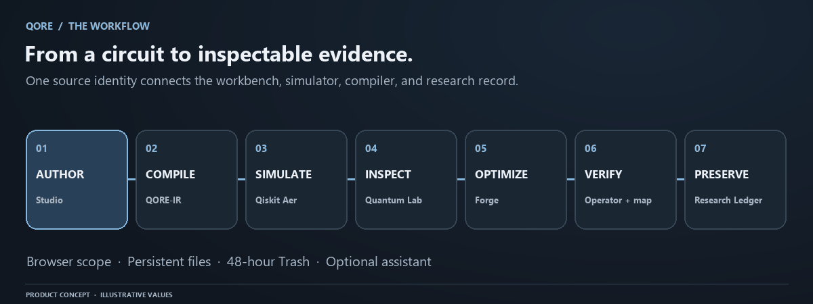

QORE documentation
QORE connects circuit authoring, numerical execution, visual inspection, compiler comparison, and historical evidence. This manual describes the product and its bounded runtime for
Conceptual workflow. Numerical evidence and save status come from your actual QORE session.
QORE connects circuit authoring, numerical execution, visual inspection, compiler comparison, and historical evidence. This manual describes the product and its bounded runtime for learners, researchers, maintainers, and service operators. Each topic has a separate page so you can follow a task, study a concept, or find an exact interface without searching a single oversized document.
Begin with an empty Explorer—no account is required. Create a blank file, or explicitly choose Get Started to create one editable three-qubit starter. Browser storage retains editable source across refreshes; browser-scoped SQLite records preserve projects, runs, and Research Ledger evidence when the server has durable storage.

Guides
| Page | Purpose |
|---|---|
| Getting started | Navigate and complete a first session |
| Workspace files | Create, organize, edit, delete, undo, and restore source |
| Local development | Install, build, and run the application |
| Files and recovery | Edit, organize, synchronize, delete, and restore |
| First experiment | Predict and inspect a GHZ circuit |
| Learning path | Progress from one qubit to algorithms |
| Troubleshooting | Diagnose identity, save, runtime, and display issues |
Feature manuals
- Studio: Explorer, paths, editing, state, and responsive panels.
- Quantum Lab: simulation settings, distributions, noise, and metadata.
- State World: orbital state views, spheres, amplitudes, and matrices.
- Forge: compilation, resource comparisons, validation, and approval.
- Research Ledger: runs, experiments, immutable evidence, and restoration.
- Assistant: secondary sidebar, source-matched context, and privacy.
- Terminal: supported commands, output, and error locations.
Quantum concepts
- Foundations, gates and circuits, measurement.
- Entanglement, Bloch spheres, unitary matrices.
- Noise and sampling, equivalence, reproducibility.
- Grover search, QAOA, applications.
Developer reference
- Architecture, data model, configuration.
- Core API, workspace API.
- Circuit Python, OpenQASM, gate catalog, limits.
Operations
- Deployment, security, testing.
- Scaling, backup and recovery, releases.
- Production checklist, daily reviews.
Use evidence within its scope
Ideal amplitudes describe a noiseless state before measurement. Shot counts are finite samples from the selected simulator and noise settings. A Bloch sphere describes one reduced qubit, which can be mixed while the complete register is pure. An operator validation applies to its recorded method, size limit, and tolerance. These are related forms of evidence, but they answer different questions.
Examples in this manual are optional learning material, never records inserted into an account by the documentation build. Asset provenance records the origins of brand marks and the illustrative nature of animation values. The actual API response is the authority for a particular execution.